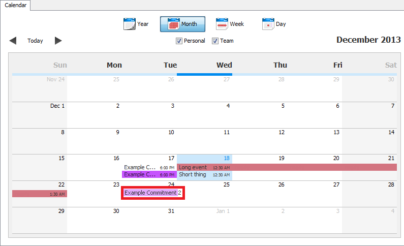

Summary
In month view, you can view your scheduled events and commitments over the course of a month.
Navigating Through the Month Calendar View
The month view has Forward, Back and Today buttons, located at the top left corner of the calendar.

By clicking the left and right arrows (Back and Forward), the displayed month can be changed. The Today button jumps to the
current month.
In month view, commitments and events that have been scheduled for certain dates are shown as blocks highlighted with the color of the category chosen
for them. The times that they start at will also be displayed. Multi-day events will be shown as bars that span the days that they take place over.
The time shown at the end of a multi-day event's bar is the time at which the event ends.
Events and commitments can easily be edited from this view by double clicking on their blocks.
To jump to a specific day from the month view, double click on that date (but not on an event on that date) and it will open the day in the day view tab.
The current day of the month is highlighted with blue.
Rearranging Events and Commitments
You can easily rearrange your event and commitments by dragging them to a new position on the calendar and dropping them. Simply click and
hold on the event's block, and release the mouse button after moving it to its new date. While dragging, the event or commitment will be shown
in its original position, and a faded version, marked here in red, will follow your mouse until it is dropped at its new date.
